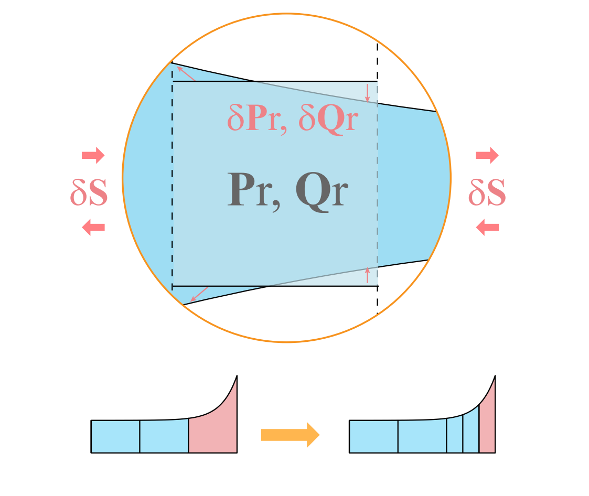
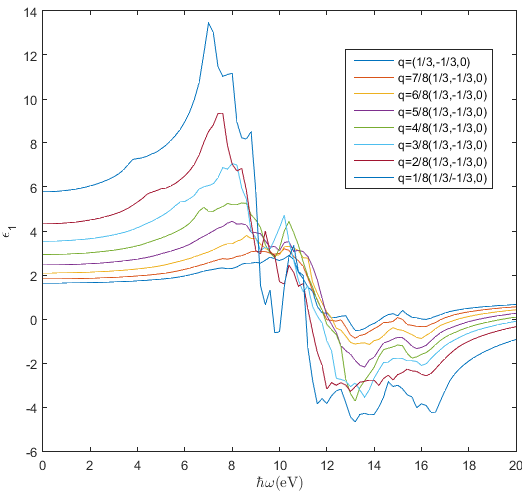

Ziwei Zhu


Welcome!
I am a PhD candidate majoring in Computer Science at Columbia University in the city of New York. I work at Columbia Computer Graphics Group with Professor Changxi Zheng . Before joining Columbia, I did research on first-principle calculation with Professor Lai Wang , and computer animation with Professor Bin Wang at Tsinghua University. I was also fortunate to intern at Meta/Facebook Reality Labs. Currently, I am doing research on computational electrodynamics and optics, with their applications on inverse design problems . I am mainly focusing on semi-analytical methods, including RCWA and EME. I am on the job market, let me know if you have any openings.
Education
- Aug., 2018 ~ present, Columbia University, PhD student
- Aug., 2014 ~ Jul., 2018, Tsinghua University, Bachelor of Science in Mathematics and Physics
Publication
 |
Ziwei Zhu, Janderson R. Rodrigues, Michal Lipson and Changxi Zheng. Inverse Design of Fabrication-Robust, Low-Loss, and Compact Waveguide Bends. Conference on Lasers and Electro-Optics (CLEO, Finalist Poster), 2023. |
|  | Ziwei Zhu and Changxi Zheng. VarRCWA: An Adaptive High-Order Rigorous Coupled Wave Analysis Method. ACS Photonics, 2022, 10.1021. |
 |
Ziwei Zhu, Utsav D. Dave, Michal Lipson and Changxi Zheng. Ultra-broadband Nanophotonics via Adaptive Inverse Design. Conference on Lasers and Electro-Optics (CLEO, Oral presentation) , 2021. |
Ziwei Zhu and Changxi Zheng. Differentiable Scattering Matrix for Optimization of Photonic Structures. Optics Express, 28(25), 2020, pp.37773-37787. |
|
 |
Ziwei Zhu, Utsav D. Dave, Michal Lipson and Changxi Zheng. Inverse Geometric Design of Fabrication-Robust Nanophotonic Waveguides. Conference on Lasers and Electro-Optics (CLEO, Oral presentation) , 2020. |
|  | Ziwei Zhu, Jiyuan Zheng, Lai Wang, Bing Xiong, Changzheng Sun, Zhibiao Hao, Yi Luo, Yanjun Han, Jian Wang and Hongtao Li. Ab Initio Calculation of Dielectric Function in Wurtzite GaN Based on Walter's Model. Chinese Physics Letters, 2017, 34:030303. |